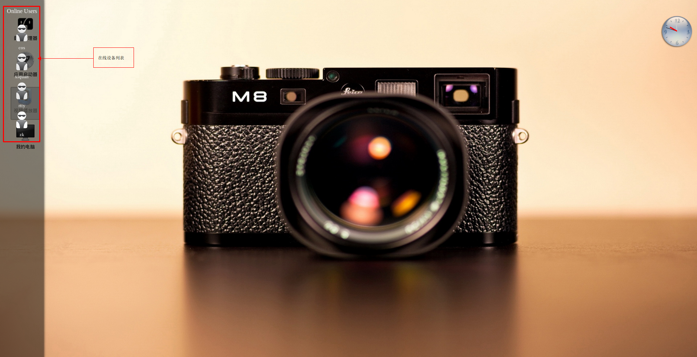
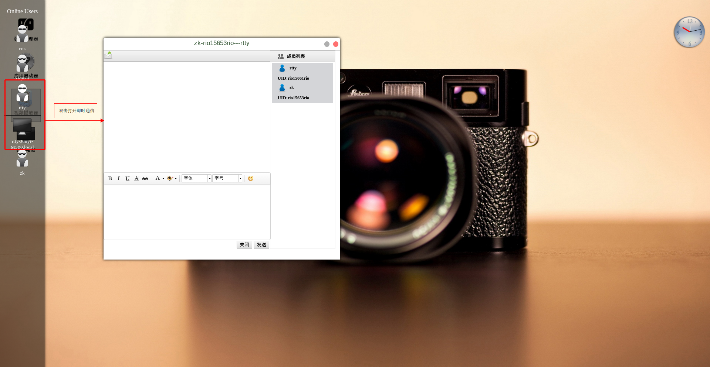
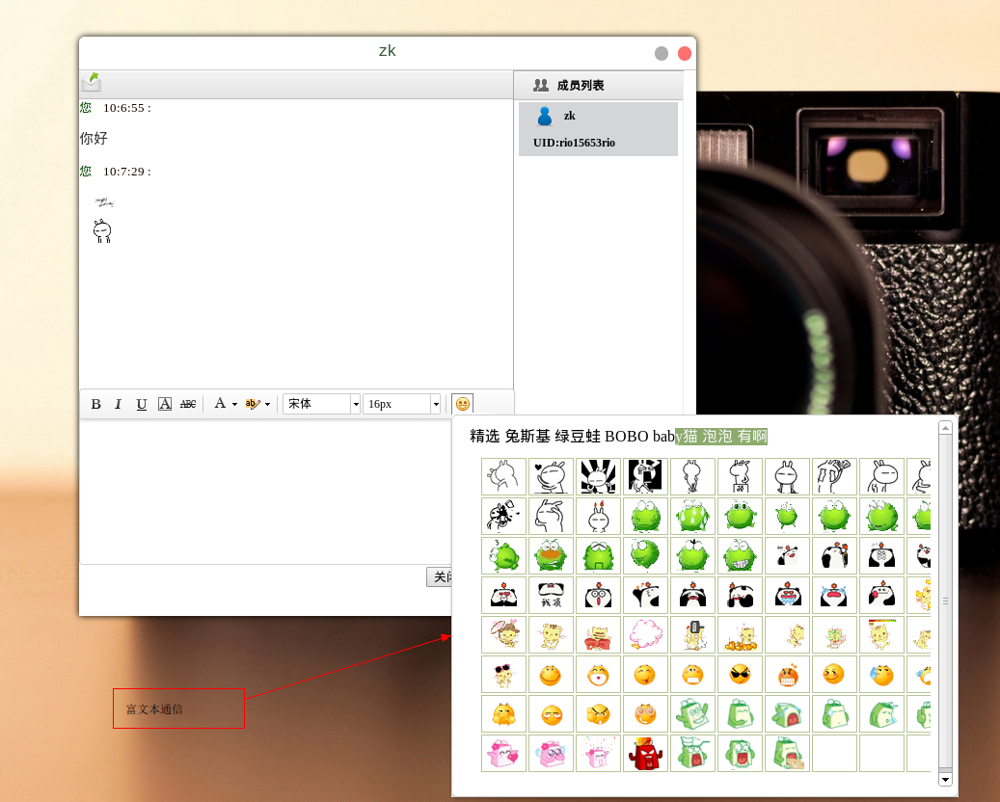
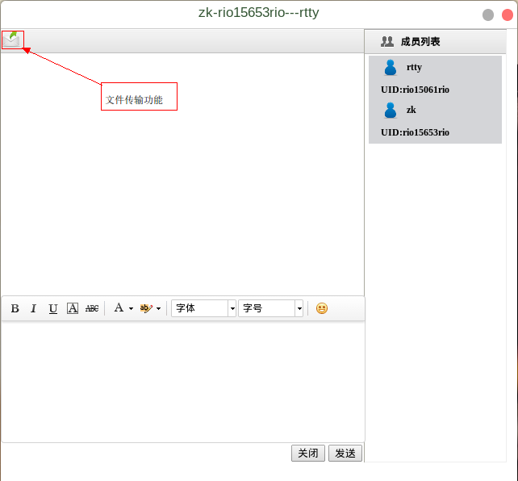

设备列表：当用户将鼠标移动到屏幕左侧时，便可见到在线用户列表以侧边栏形式展现在你的眼前。在线用户列表中显示了其他用户使用情况。当然，其他用户也必须在使用桌面管理器哟！
即时通讯：在用户设备列表中选中某一用户时，便可显示出该用户目前在线设备情况。再双击某一设备图标时，即可打开桌面管理器所提供的即时通讯插件。这样便可以轻松的和朋友愉快的聊天咯！
桌面管理器中所提供的即时通讯插件支持丰富的内容信息输入方式，可通过编辑栏将所输文字进行美化编辑，同时也自带了丰富的图库以便用户使用。
同时即时通讯插件还提供了文件传输功能。点击左上角的文件传输图标，即可轻松将文件传送给对方啦！
